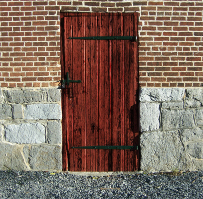

Description
SCP-004 consists of an old wooden door (SCP-004-1) and twelve rusted steel keys (SCP-004-2 through SCP-004-13). The door leads to an abandoned factory with anomalous properties.
The keys must be handled with strict procedure. Only Level 4 personnel can use them outside the testing area. Unauthorized removal leads to termination.
Effects of SCP-004
Using the wrong key (except SCP-004-7 or SCP-004-12) tears subjects apart. Body parts vanish except for a few, scattered across vast distances, some appearing years later.
SCP-004-7 leads to an impossibly large space. SCP-004-12 causes catatonia and visions of a giant green creature.
SCP-004 creates space-time anomalies. Time seems to run slower inside, and personnel report missing time.
Containment Procedures
SCP-004-1 is kept locked. Level 1 clearance allows basic access, Level 4 for key usage.
In case of breach, the keys must be secured inside before activating the on-site warhead.
Appendix: Additional Information
SCP-004-14
A large wooden box discovered later, unlocked by SCP-004-7 and some "unsafe" keys. Its inner space is much bigger than the exterior. Objects vanish when the locked box is closed.